Usability & simplicity first.
I design digital experiences that are intuitive, accessible, and human-centered. Currently studying computer scince with an interest in design & frontend development
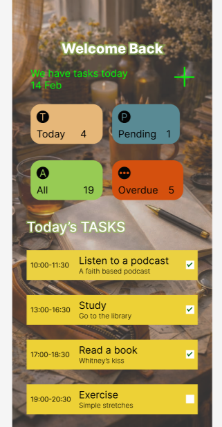
To-Do App
A task management app focused on reducing cognitive load and making task entry fast and intuitive.
View case study →Music Player
A clean music player designed for one-handed use and quick access to playback controls.
View case study →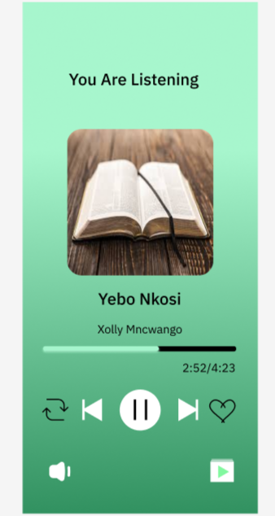
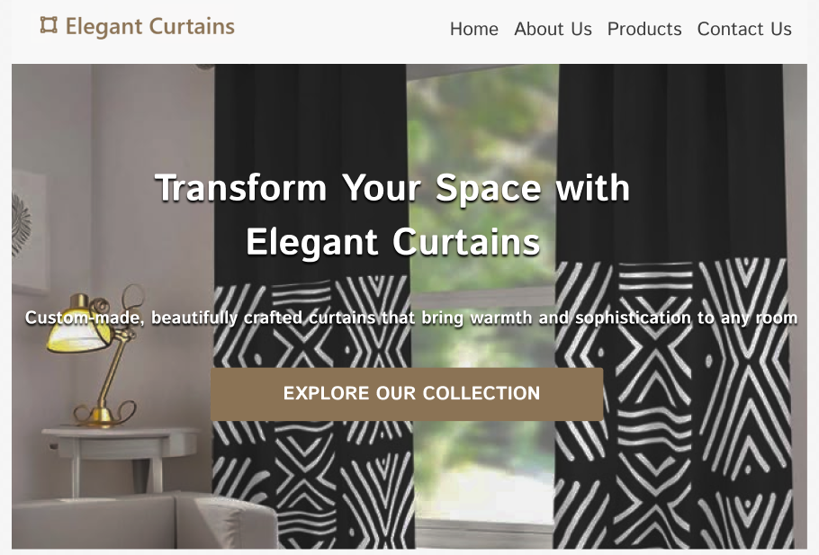
Website Design
A content-heavy website organized for better scannability and reduced cognitive load.
View case study →To-Do App
From cognitive overload to clarity
01 Problem
Users forget tasks and struggle with complex apps.
02 Research
Existing apps are cluttered and unclear.
03 Ideation
Focused on simple vertical layout.
04 Wireframes
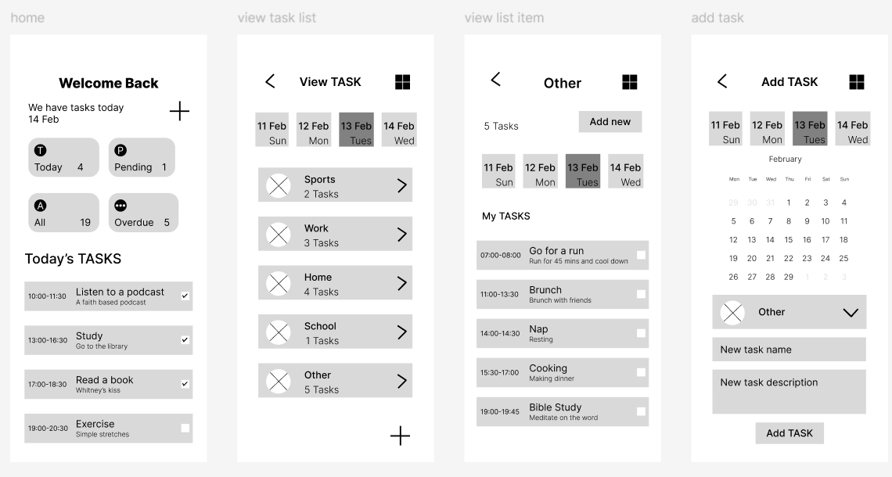
05 Prototype
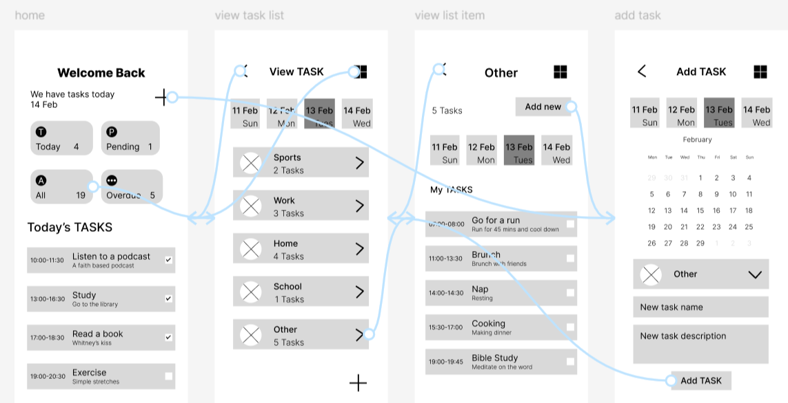
06 Final
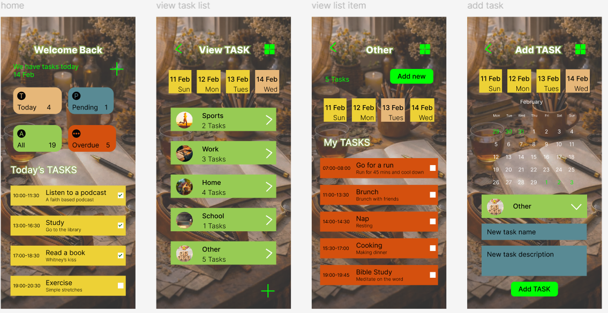
07 What Worked
Clear and easy to use with color-coded tasks.
08 Improvements
Add reminders and usability testing.
UX Laws Applied
Hick's Law – reduced choices
Fitts's Law – large buttons
Gestalt – grouping tasks
Von Restorff – highlight actions
Jakob's Law – familiar UI
Cognitive Load – simple layout
Colour Psychology – task states
F & Z Pattern – readable flow
Music Player
Clean controls for better listening
01 Problem
Music apps can feel cluttered and hard to navigate.
02 Research
Users struggle to quickly find controls and navigate playlists.
03 Ideation
Focused on large controls and minimal layout.
04 Wireframes
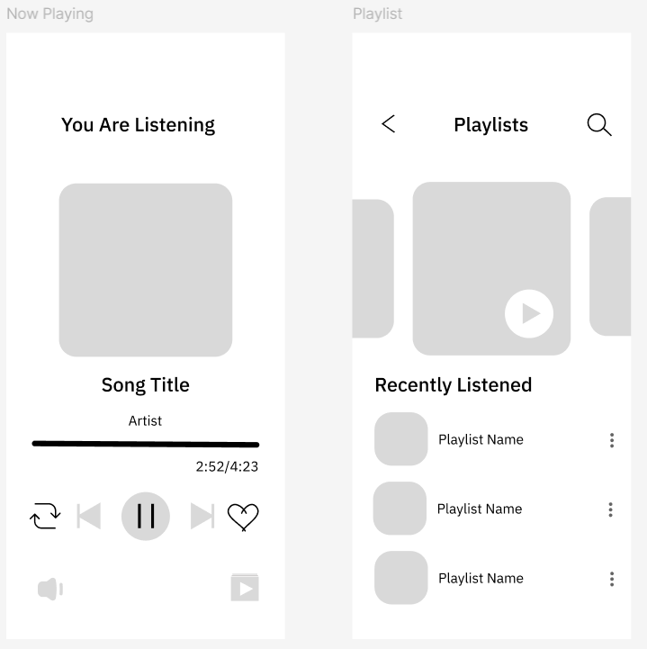
05 Prototype
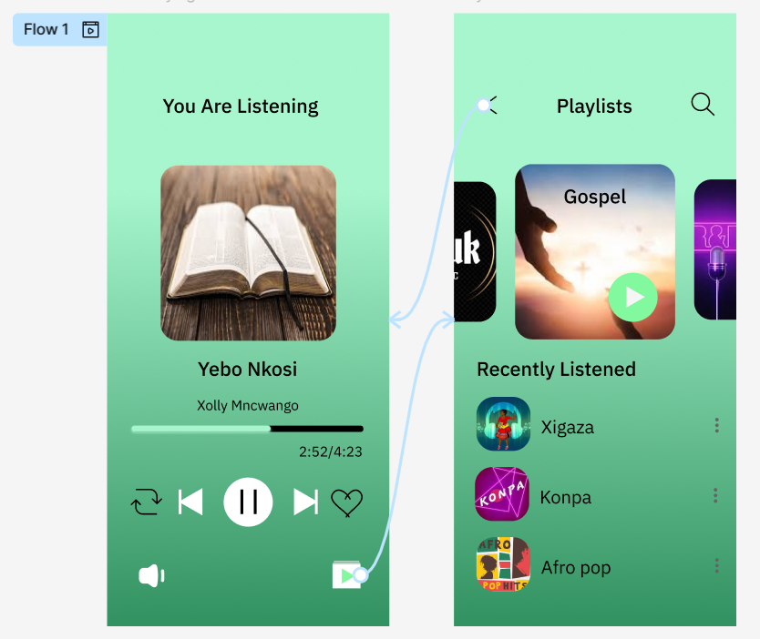
06 Final
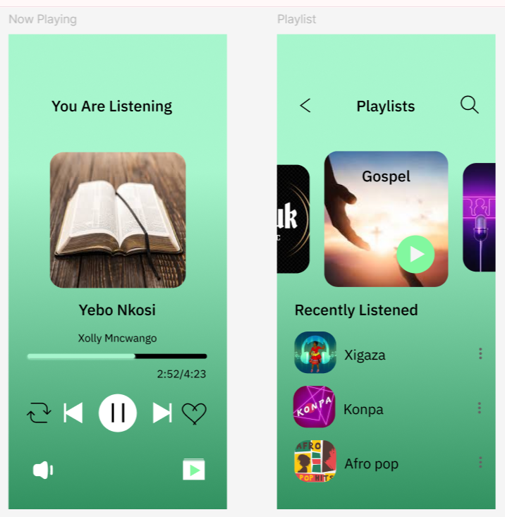
07 What Worked
Simple navigation and clear playback controls.
08 Improvements
Add search and playlist customization.
UX Laws Applied
Fitts's Law – large play buttons
Hick's Law – fewer options
Gestalt – grouped controls
Von Restorff – highlight play button
Website Design
Structure that guides the eye
01 Problem
Websites often overload users with too much content.
02 Research
Users scan content and ignore cluttered layouts.
03 Ideation
Focused on structured layout and spacing.
04 Wireframes
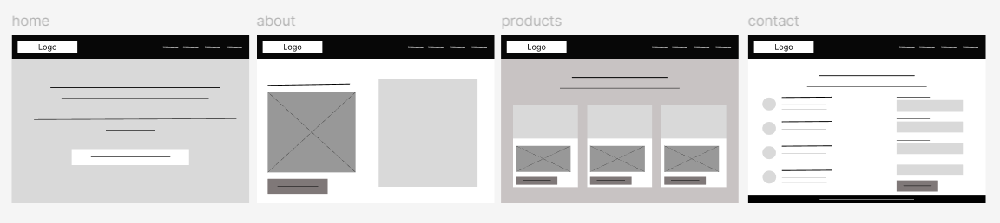
05 Prototype
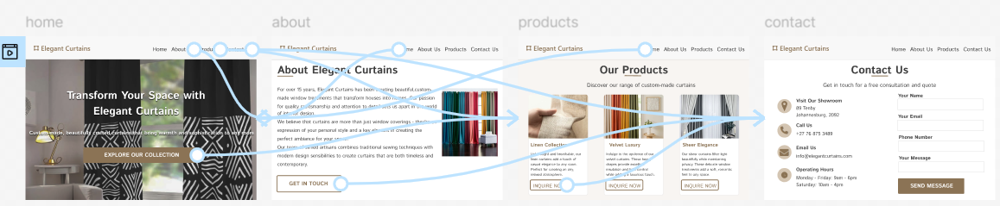
06 Final
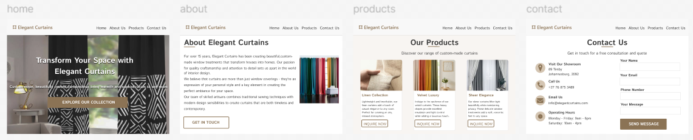
07 What Worked
Clear hierarchy and easy navigation.
08 Improvements
Improve responsiveness and accessibility.
UX Laws Applied
F Pattern – layout scanning
Gestalt – grouping sections
Jakob's Law – familiar layout
Cognitive Load – reduced clutter